Project Summary
Unpacking@10 King St W. is an autobiographic documentary about my relationship to my workplace, set within my cubby in the break room.
For this project, I 3D scanned all the objects in my cubby, as well as myself, creating digital models that were imported into the Unity engine. From here, the player model was shrunk down and my cubby was recreated digitally allowing players to explore an accurate recreation of the space, players can read notes from co-workers, see my old schedules, and interact with and learn about all thing things I use at my work.
The simple gameplay loop involves manipulating objects by grabbing and moving them in order to throw them out of the cubby. This increases the players sentimentality score and triggers audio narration that describes the object that was just removed.
Click here to download and read my long form critical reflection on this project.
Project Link and Download
Click here to download Unpacking@10 King St W.Alternatively, click here to view and download the project from its itch.io page.
Download Intructions
1. Download the .zip file
2. Right-click and extract the files anywhere on your computer
3. Keep all files in the file folder together
4. To launch the game, double click the .exe file
Images
Click on any image to view it fullscreen in a new tab.
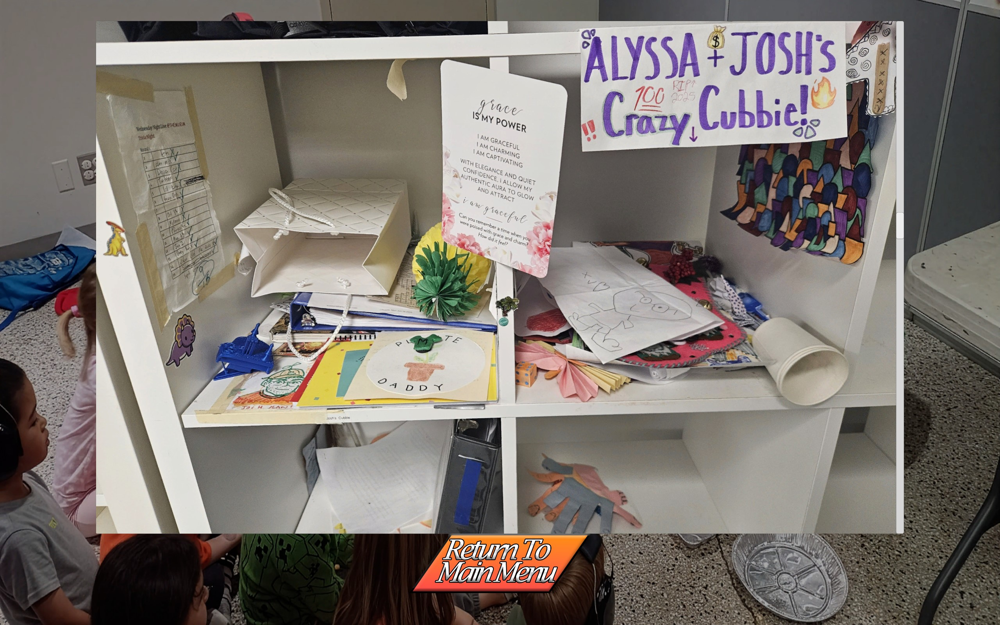
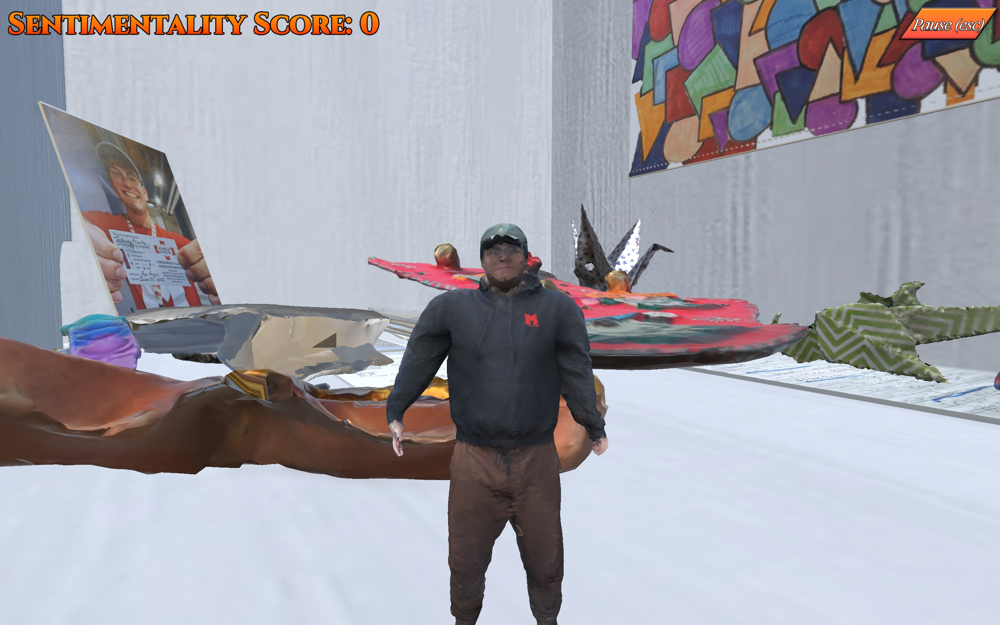
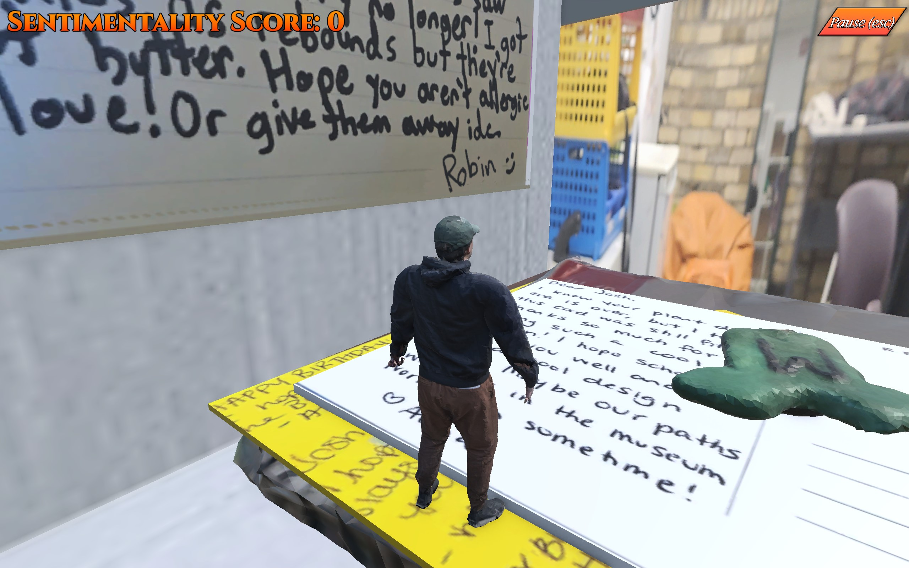
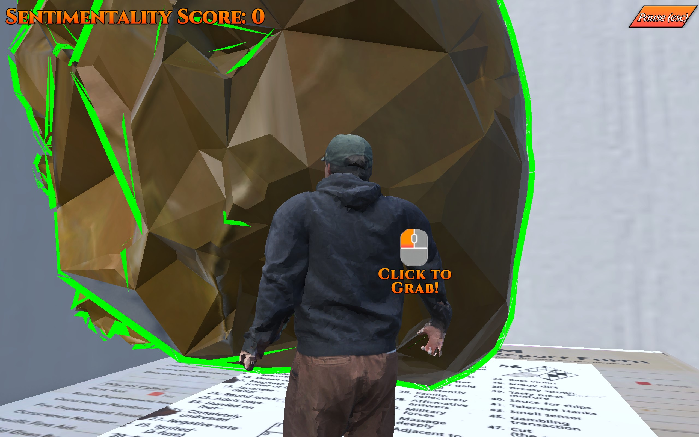
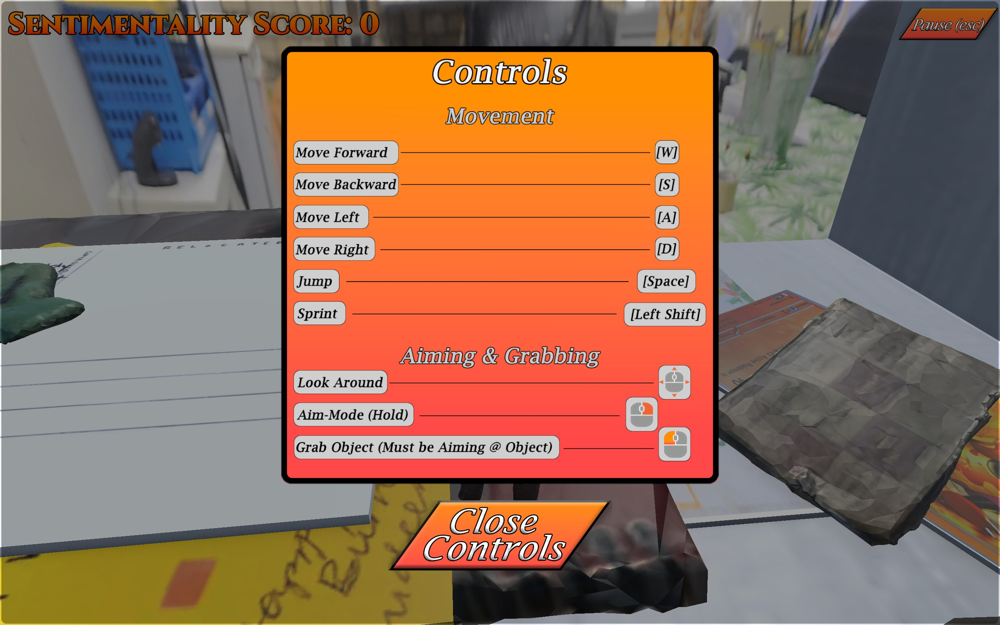
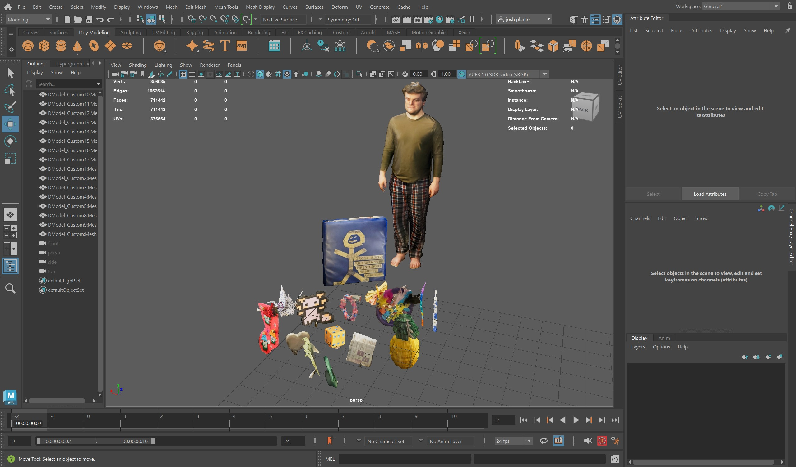
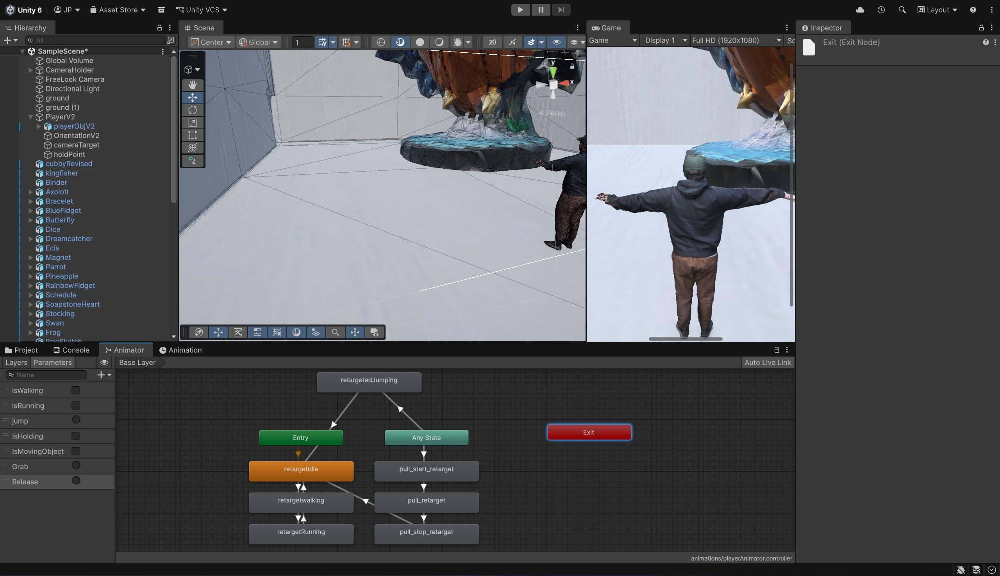
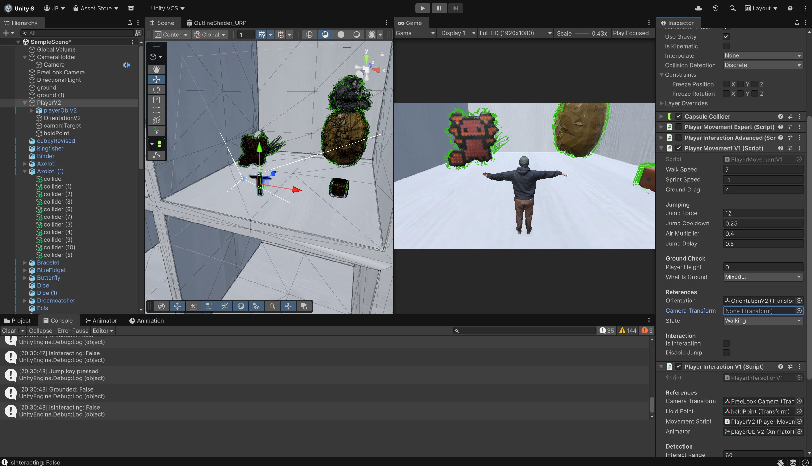
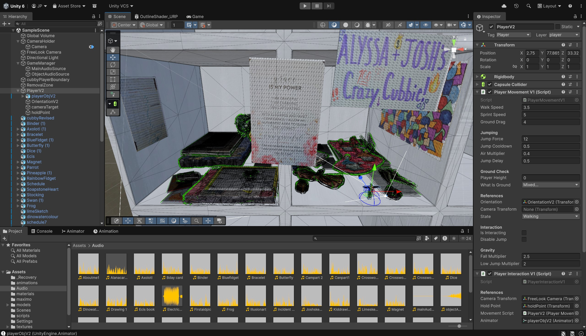
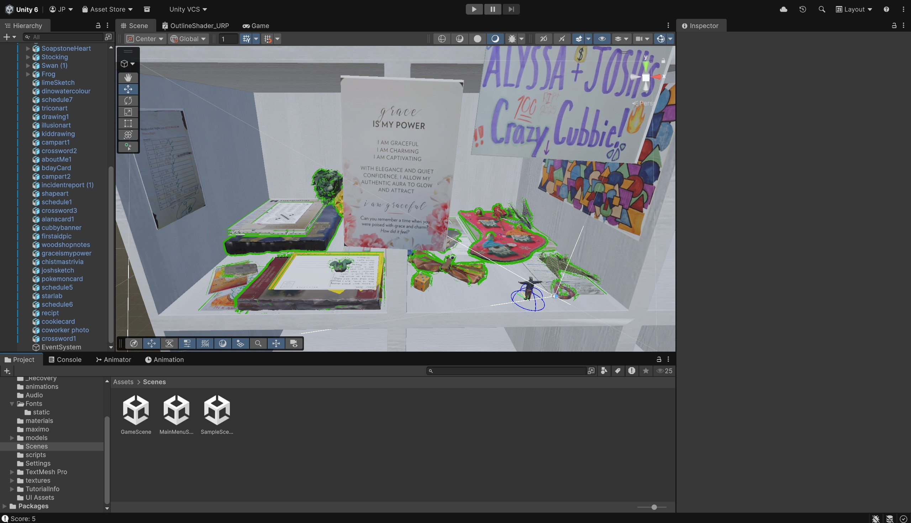
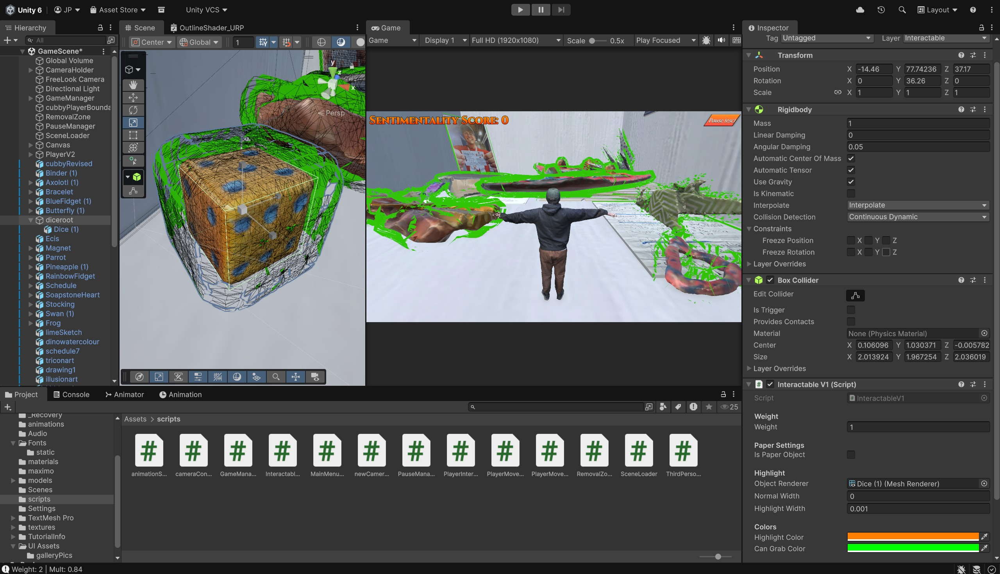